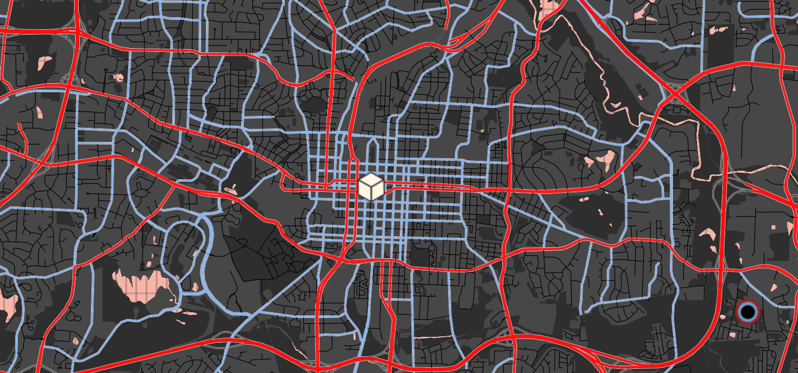
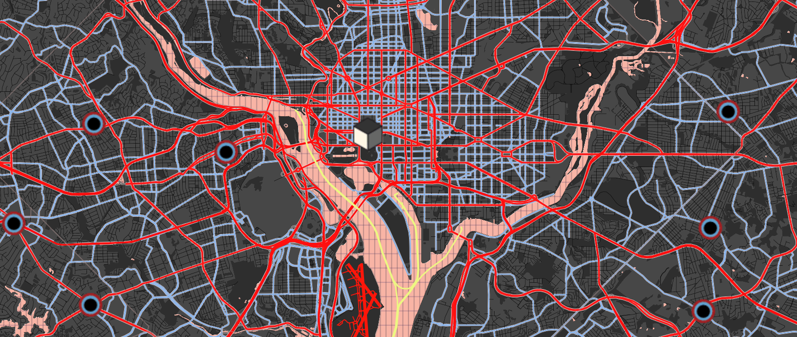
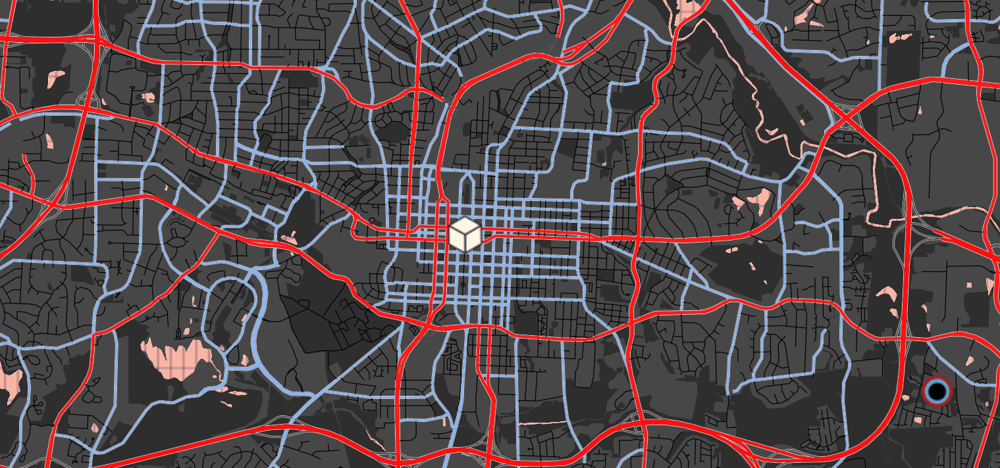
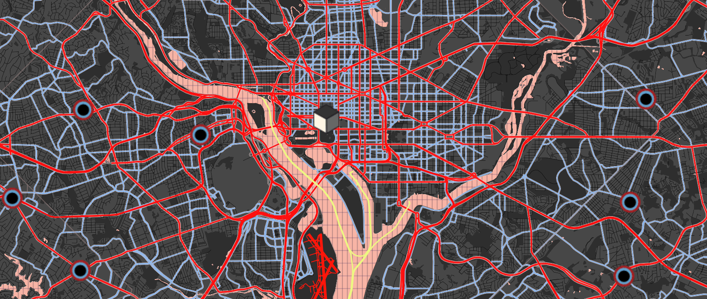
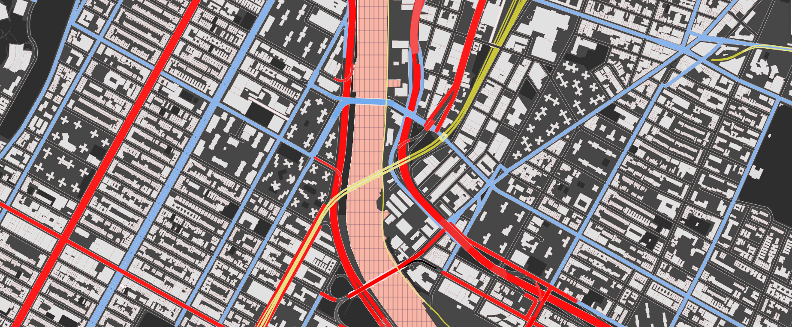
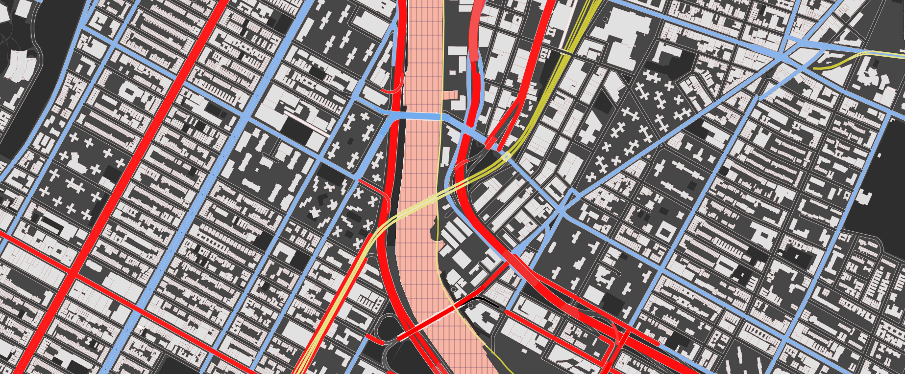

Abstract Mapping
Geo 572
On the right is Composition A XXI (1925) by Laszlo Moholy-Nagy, a Hungarian artist associated with the Bauhaus school in the 1920s. He was part of a broader movements at this time in Europe of constructivism, cubism, suprematism, and other abstract design forms characterized by assemblages of recognizable geometric forms and solid primary colors. For example, this font, Space Grotesk, derived from the Grotesk typeface which was used along with other simple sans serif fonts in various Bauhaus designs. Taking visually similar works shown in the slideshow below, the styles have been translated to a map.


We can utilize some of the forms we see here as a symbology for cities, and make the roadways and transportation networks into solid lines. Keeping with minimal descriptions, only cities are labeled and borders are faint lines.
 




Grayling, Michigan, a small town
Raleigh, North Carolina, a state capital with a clear grid layout in its downtown
Washington DC
Ulaabaatar, Mongolia. Ultimately, regions of the world becomes difficult to distinguish.
Next to show from various zoom levels
 

The world with a grid and points
Showing the connecting line roadways
Large roadways and the yellow ferryways in the NYC area
Bridges and railways in upper Mannhattan, now showing buildings
Full map available below
Credits:
Map created with Mapbox Studio
Data from openstreetmap
Artwork from wikiart.org